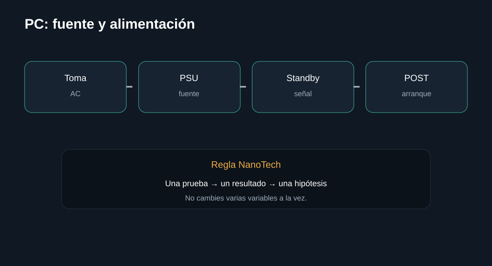

Introducción

Cómo separar toma, cable, fuente, placa y POST sin abrir una fuente de alimentación. La guía busca que puedas separar causas antes de sustituir componentes.
Antes de empezar: seguridad
Desconecta el equipo cuando corresponda y no realices mediciones peligrosas sin formación e instrumental. En baterías, fuentes y placas, detén el procedimiento si detectas daño físico, líquido, olor extraño o calor anormal.
- Documenta el estado inicial.
- Haz una sola modificación cada vez.
- Conserva tornillos, cables y configuración original.
Herramientas
1. Toma y cable
Descarta lo externo primero.
Qué hacer
- Prueba otra toma.
- Comprueba el cable de alimentación.
- Verifica interruptor de la PSU si existe.
Registra el resultado antes de continuar.
InterpretaciónDescarta lo externo primero.
2. Señales de standby
Una placa puede mostrar LEDs incluso si no realiza POST.
Qué hacer
- Observa LEDs de placa.
- No interpretes un LED como prueba definitiva de una fuente sana.
- Desconecta periféricos no esenciales.
Registra el resultado antes de continuar.
InterpretaciónUna placa puede mostrar LEDs incluso si no realiza POST.
3. Conectores de placa
La alimentación principal debe estar correctamente conectada.
Qué hacer
- Comprueba ATX principal y EPS CPU con el equipo desconectado.
- No fuerces conectores.
- Verifica compatibilidad de cables modulares: nunca mezcles cables de PSU diferentes.
Registra el resultado antes de continuar.
InterpretaciónLa alimentación principal debe estar correctamente conectada.
4. Prueba de fuente
Si necesitas medir una PSU, usa instrumental y procedimiento seguro.
Qué hacer
- No abras la fuente.
- Una fuente desconectada puede contener energía almacenada.
- Si no tienes experiencia, deriva la prueba a técnico cualificado.
Registra el resultado antes de continuar.
InterpretaciónSi necesitas medir una PSU, usa instrumental y procedimiento seguro.
Diagnóstico final
Fuentes y notas
La guía evita pruebas de puenteo o apertura de la PSU. Para diagnóstico de red eléctrica o fuente interna se recomienda técnico cualificado.